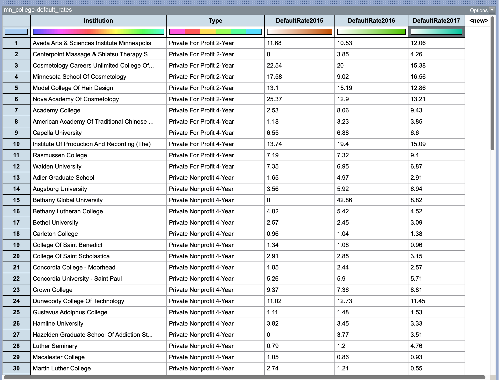

Cases and Attributes
Consider the following data (mn-colleges-default-rates.tp3) which include information on the three-year loan default rates from 2015, 2016, and 2017 for 83 post-secondary institutions in Minnesota. Take a minute to look familiarize yourself with these data.
These data have a tabular structure, that is, it is organized into rows and columns; we refer to this as a case table.. In tabular data, the rows represent cases (also sometimes referred to as units) and the columns represent attributes (also referred to as variables).
PROTIP
It is important to identify what the cases and attributes are when you initially look at a new data set.
In these data, there are 83 cases, and each case is a post-secondary institution in Minnesota. That is, each row represents a different post-secondary institution in Minnesota. There are five attributes in these data. Attributes are the information or characteristics that are collected for each of the cases. The attributes in these data are:
Institution: The name of the post-secondary institution.Type: The type of post-secondary institution based on how Minnesota classifies these institutions (Private For-Profit 2-year; Private For-Profit 4-year; Private Nonprofit 4-year; Public 2-year; Public 4-year; University of Minnesota)DefaultRate2015: The percentage of borrowers at the institution who defaulted on their loans in the three fiscal years between October 01, 2013–September 30, 2015.DefaultRate2016: The percentage of borrowers at the institution who defaulted on their loans in the three fiscal years between October 01, 2014–September 30, 2016.DefaultRate2017: The percentage of borrowers at the institution who defaulted on their loans in the three fiscal years between October 01, 2015–September 30, 2017.
Questions to Ask about Every Data Set
Aside from identifying the cases and attributes, here are some other questions about collected data that you should answer (Gould & Ryan, 2013):
- Who collected the data?
- How and where were the data collected?
- Why were the data collected?
The answers to these questions give us information about the data’s context, which is key to drawing reasonable conclusions and interpreting any statistical analyses. If you are the one collecting the data, you should record all of this information so others have access to it. For our data here are the answers to these questions:
- Who collected the data? These data are collected by the Minnesota Office of Higher Education. Learn more here.
- Why were the data collected? These data are collected for monitoring debt trends and evaluating state financial aid policies. Colleges and universities with consistently high student loan default rates over a period of three years may be denied participation in federal and state financial aid programs for their students.
- How and where were the data collected? The data three-year default rates were computed based on date provided by the U.S. Department of Education that includes informarion on official cohort default rates once per year. Institutions report this information to the U.S. Department of Education annually.
Classifying Attributes
Our ultimate goal is often to analyze the data we have to learn from it. For example, in our MN post-secondary institution data, we may be interested in knowing what the average three-year default rate is for Minnesota post-secondary institution. Or, we may want to know whether borrowers from some institution types are more likely to default than borrowers from other institution types. The type of analyses we can do, however, depend on the type of attributes we have.
We typically classify attributes as either categorical attributes or quantitative attributes. These classifications are based on the type of information (data) in the attribute. A categorical attribute has values that represent categorical (or qualitative) differences between the cases, whereas a quantitative attribute represents numerical (or quantitative) differences between cases. For example, in our data, the following attributes are categorical:
- Institution name (
Institution) - Classification of the institution (
Type)
Typically attributes that have numerical values are quantitative. (Sometimes numbers are used to represent different categories for a categorical attribute. For example, public institutions could be coded as “1” and private institutions could be coded as “0”. Although the values in this coded attribute would be numeric, these numbers actually are meaningless other than representing different categories.) One check of whether an attribute is actually quantitative is whether operations such as “less than” or “greater than” are meaningful when comparing two data values in the attribute. If the answer is “yes”, than the attribute is quantitative. If those operations are not meaningful, then the numeric values are simply categories and the attribute is categorical.
Consider the loan default rates in our data. In this case, the operations of “less than” and “greater than” have meaning in that by comparing two values tell us that an instituiton has a lower or higher rate of borrowers who default on their loans. For example by comparing the 2017 default rates of Aveda Arts & Sciences Institute Minneapolis (12.06) and University Of Minnesota - Twin Cities (2.27), we can say that the borrowers from the University Of Minnesota - Twin Cities are less likely to default on their loans than borrowers from Aveda Arts & Sciences Institute Minneapolis. Because of this, we can confirm that the attribute DefaultRate2017 is a quantitative attribute.
In contrast, consider our propsed attribute in which public institutions were coded as “1” and private institutions were coded as “0”. If you compared Macalester College (a private university with a value of 0) to the University Of Minnesota - Twin Cities (a public university with a value of 1), the operations of “less than” and “greater than” are meaningless. It doesn’t make sense to say that a public university is greater than or less than a private unversity (at least in the mathematical sense). Because of this, our hypethetical attribute would be a categorical attribute.
In our data, we have three quantitative attributes:
- The three-year default rate for fiscal years between October 01, 2013–September 30, 2015 (
DefaultRate2015) - The three-year default rate for fiscal years between October 01, 2014–September 30, 2016 (
DefaultRate2016) - The three-year default rate for fiscal years between October 01, 2015–September 30, 2017 (
DefaultRate2017)
References
Gould, R., & Ryan, C. (2013). Introductory statistics: Exploring the world through data. Pearson.